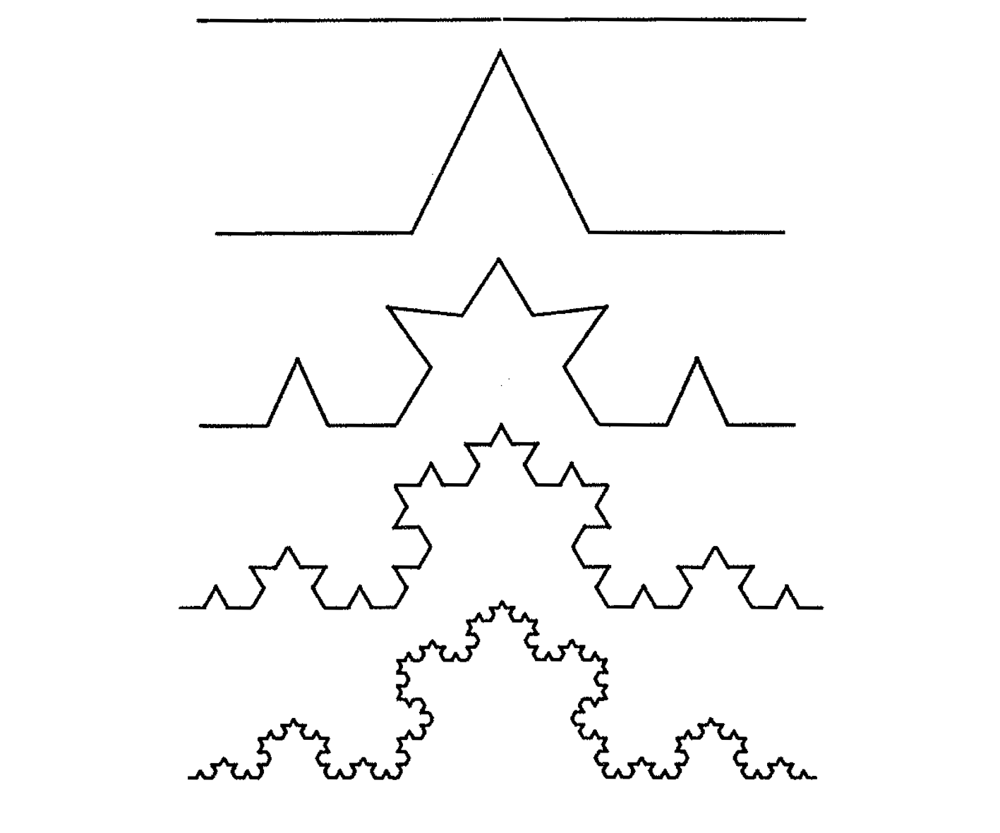

Recursion
- Remember, recursion is a problem-solving technique in which tasks are completed by reducing them into repeated, smaller tasks of the same form.
- It comprises two main components: the base and the recursive cases
Fractals
- A fractal is any repeated, graphical pattern.
- A fractal is composed of repeated instances of the same shape or pattern, arranged in a structured way
Drawing Fractals with the Turtle Graphics
-
The
turtlemodule provides some basic commands for drawing lines on the screen in an animated way. -
You can think it as a turtle holding a pen.
- The
turtlehas three attributes: alocation, anorientation, and apen. - The
penhas attributescolor,width, andstate. - For example, the following code asks the turtle to draw a line 150 pixels long.
import turtle
pen = turtle.Turtle()
pen.forward(150)
- You can also ask it to move forward, backward, and turn left and right, as well as to draw a circle:
import turtle
pen = turtle.Turtle()
for i in range(360):
pen.forward(1)
pen.right(1)
-
All functions available as part of the turtle library are available at https://docs.python.org/3/library/turtle.html.
-
You can draw different geometric figures.
- For instance, you can instruct the turtle to draw the Koch snowflake following a recursive strategy.

- The base is a straight line
- The procedures to draw the first level include:
- Draw a line 1/3 the total length
- Rotate 60 degrees to the left
- Draw another line 1/3 the total length
- Rotate 120 degrees to the right
- Draw a third line 1/3 the total length
- Rotate 60 degrees to the left
- Draw a fourth and final line 1/3 the total length
- For the next level, you simply take one of the lines and draw a shrunken copy of the described procedure
import turtle
def koch(t, order, size):
if order == 0:
t.forward(size)
else:
koch(t, order-1, size/3)
t.left(60)
koch(t, order-1, size/3)
t.right(120)
koch(t, order-1, size/3)
t.left(60)
koch(t, order-1, size/3)
def main():
pen = turtle.Turtle(shape="turtle")
screen = turtle.Screen()
screen.title('Turtle Koch Curve')
pen.color("green")
pen.shapesize(1)
pen.penup()
pen.speed('fastest')
pen.backward(150)
pen.pendown()
koch(pen, 3, 300)
screen.exitonclick()
if __name__ == '__main__':
main()